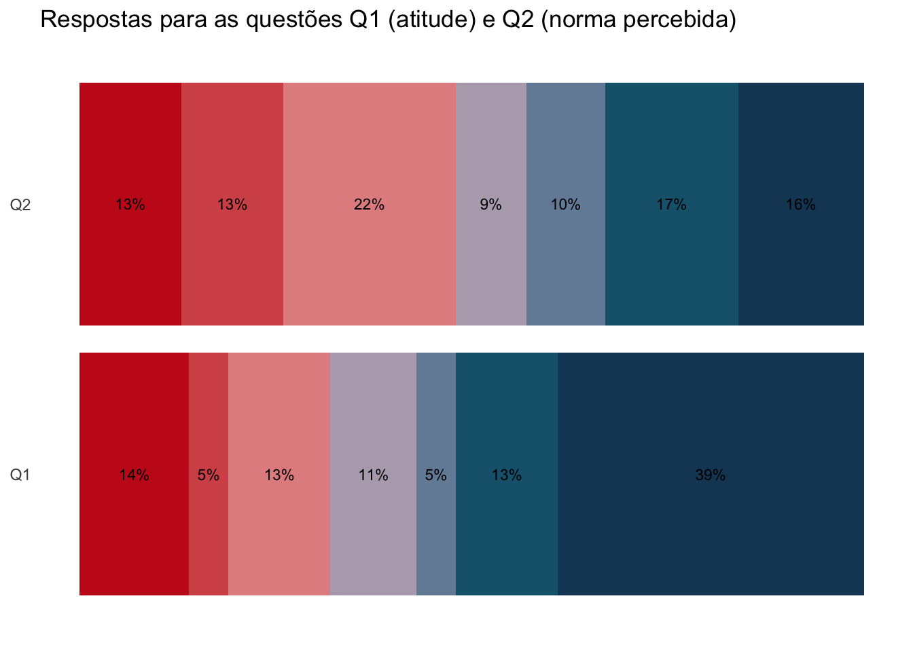

Uma das formas de apresentar o resultado de pesquisas é utilizar gráficos de barras empilhadas na horizontal. Vamos ver como isto funciona.
Nossa pesquisa possui 2 perguntas inspiradas no levantamento de intenção:
O projeto trará mudanças que deixarão o trabalho mais efetivo.
Minha equipe considera que o projeto trará mudanças que deixarão o trabalho mais efetivo.
Para cada pergunta o respondente seleciona um valor de 1 a 7, onde 1 significa que “Discorda totalmente” e 7 significa que “Concorda totalmente”.
Para este post basta saber que as perguntas visam comparar o que o entrevistado tem de atitude (pergunta 1) e de norma percebida (pergunta 2). Comparar as respostas destas perguntas nos permite avaliar como a percepção do associado é influenciada por suas atitudes (“o que ele acha”) e pelas normas sociais que ele percebe (“o que ele acha que os outros acham”). Há um post no blog específico sobre como montar questões com este objetivo.
Neste exemplo, as perguntas estão sendo utilizadas para demonstrar que em pesquisas é comum durante a análise dos resultados comparar as quantidades de respostas recebidas para diferentes perguntas.
Então, a pergunta é: Qual é a melhor forma de comparar as respostas destas perguntas?
Vamos construir um exemplo hipotético para avaliar as alternativas. Consideremos um universo de 50 entrevistados cujas as respostas oscilaram entre 1 e 7 aleatóriamente.
library(tidyverse)
── Attaching core tidyverse packages ──────────────────────── tidyverse 2.0.0 ──
✔ dplyr 1.1.2 ✔ readr 2.1.4
✔ forcats 1.0.0 ✔ stringr 1.5.0
✔ ggplot2 3.4.2 ✔ tibble 3.2.1
✔ lubridate 1.9.2 ✔ tidyr 1.3.0
✔ purrr 1.0.1
── Conflicts ────────────────────────────────────────── tidyverse_conflicts() ──
✖ dplyr::filter() masks stats::filter()
✖ dplyr::lag() masks stats::lag()
ℹ Use the conflicted package (<http://conflicted.r-lib.org/>) to force all conflicts to become errors
Vamos começar comparando stacked bars com divergin stacked bars (você já vai ver a diferença entre os dois).
Stacked Bars
lik_colors =c("1"="#C71E1D", "2"="#D55457", "3"="#E48F8F", "4"="#B5AAB9", "5"="#748CA5", "6"="#17627B", "7"="#174664")sdt |>ggplot(aes(question, p, label =paste0(as.character(100*p),"%"), fill = forcats::fct_rev(level))) +geom_col(position ="stack") +geom_text(size =3, position =position_stack(vjust =0.5)) +theme_minimal() +labs(title ="Respostas para as questões Q1 (atitude) e Q2 (norma percebida)",x =NULL, y =NULL, fill =NULL) +scale_fill_manual(values = lik_colors) +coord_flip() +theme(axis.text.x =element_blank(),axis.title.x =element_blank(),panel.grid =element_blank(),legend.position ="none")

O gráfico nos mostra que mais de 50% dos entrevistados possui uma atitude (Q1) favorável ao questionamento. Mas esta posição é diferente quando avaliamos a norma percebida (Q2).
Ou seja, os entrevistados concordam que a mudança trará benefícios, mas não estão certos se seus pares consideram o mesmo.
Para fazermos esta comparação é útil avaliar os pesos das respostas nos extremos. O gráfico de barras empilhado nos ajuda nesta tarefa. Fica fácil comparar que as respostas de Q1 e Q2 diferem nos valores de 1 e 2, 6 e 7. Nestes casos importam menos as comparações entre as quantidades de respostas de 3, 4 e 5.
Diverging Stacked Bars
Também são populares os gráficos de barras empilhados divergentes (diverging stacked bars). Vamos construir estes gráficos para os mesmos dados.
Uma decisão importante nos gráficos divergentes é se vamos ou não incluir o valor neutro (4) no gráfico. Não há consenso sobre esta questão, e particularmente eu prefiro a opção de não incluir, conforme argumentado pelos autores deste post.
library(scales)
Attaching package: 'scales'
The following object is masked from 'package:purrr':
discard
The following object is masked from 'package:readr':
col_factor
Os gráficos de barras empilhadas divergentes seriam úteis caso desejássemos comparar os valores intermediários (3 e 5, no caso). Para respostas da survey, é mais importante comparar os valores extremos, e por isto o gráfico empilhado permite uma comparação mais efetiva.
Citation
BibTeX citation:
@misc{abreu2023,
author = {Abreu, Marcos},
title = {Análise de resultados de pesquisas},
date = {2023-05-14},
url = {https://abreums.github.io/posts/2023-05-14-analysis-of-survey-results/},
langid = {pt-br}
}
![]()